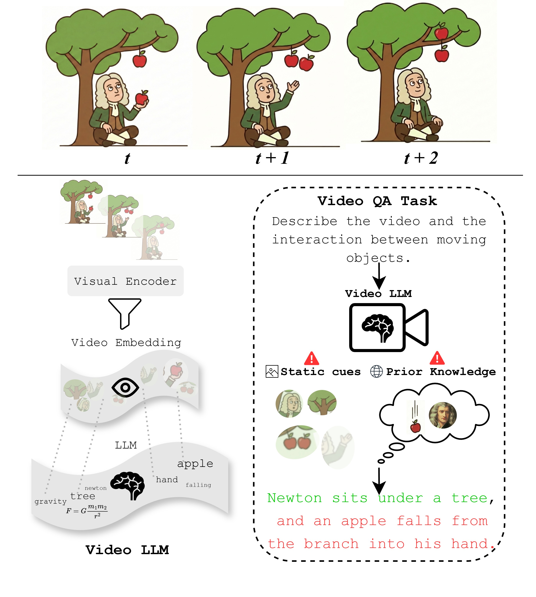

Static-Cue Dominance
Salient appearance and context can overshadow low-signal but decisive pixel dynamics, causing state transitions and motion to be underweighted or missed.

Static-Cue Dominance
Salient appearance and context can overshadow low-signal but decisive pixel dynamics, causing state transitions and motion to be underweighted or missed.
Prior-Driven Temporal Hallucination
Learned event priors can override the observed motion and complete the most likely script even when the video shows otherwise.
Video is inherently temporal: the meaning of an event often lies not in what appears in a single moment, but in how states change, interact, and unfold over time. Video makes this dynamic structure explicit by encoding motion, interaction, and causality directly in pixel-level changes across time.
Together, these patterns misorder the evidence hierarchy of video understanding, allowing models to succeed without explicitly tracking state evolution over time. Temporal and causal claims must therefore remain grounded in observed pixel dynamics.
Current Video LLMs achieve remarkable performance on recent video benchmarks, yet these systems still fail at rudimentary temporal understanding and movement perception. The apparent success of these models often reflects how well they satisfy benchmark requirements, not necessarily how well they perceive temporal dynamics.
If a video understanding benchmark can be solved without seeing the video, it is not measuring video understanding; it is measuring language reasoning. Frame shuffling, semantic-only probes, and shortcut-aware diagnostics repeatedly show how weak current progress metrics can be with respect to time.
Current architectures systematically compress or defer temporal information. Image-first encoders, shallow fusion modules, and language-heavy reasoning stacks preserve object semantics far more reliably than the dynamics that emerge only through transitions over time.
Describe the motion of the balls in the video.
The physically invalid Newton’s cradle makes the problem unusually clear. The rightmost ball remains stationary after impact, yet the model restores the canonical momentum-transfer story.
Video LLMs can appear temporally competent while systematically underusing the very signal that makes video distinct: dynamic evolution in pixels. Across recent diagnostic probes, two recurring patterns emerge.
The prevailing paradigm still inherits an image-language bias: video is treated as a set of sampled frames rather than a continuous spatiotemporal signal. When appearance is held nearly fixed and only the trajectory changes, even simple motion primitives become fragile.
Accuracy (%) on 3 second collision videos from AVoE using 16 sampled frames and a binary Yes/No task: does the left/right object change direction after collision?
| Model | Input Frames | Expected | Surprising |
|---|
These 3 second collision clips isolate the binary question of direction change after impact while holding appearance nearly fixed. Across all three examples, both models answer incorrectly.
Directionality is encoded only across time. Across these clips, the model repeatedly misclassifies clockwise rotation as counter-clockwise.
When the visual evidence is subtle or counterintuitive, Video LLMs often do not default to uncertainty. Instead, they hallucinate a false reality, substituting canonical event scripts for evidence-based state tracking.
These examples expose environmental hallucination, role reversal, invented trajectories, and fabricated causal mechanisms under motion-focused prompting.
Describe the complete sequence of motion and events in this video from start to finish. Focus specifically on the dynamics of the scene.
In an IntPhys2 teleportation video, the ball appears on the other side of a wall after a camera pan. Rather than identifying a physical impossibility, the model fabricates an impact-driven wall rotation.
Gemini-2.5-Pro output
“The force of the moving ball strikes the left side of this panel. This transfer of kinetic energy causes the panel to pivot sharply on its vertical axis.”
Recent benchmark design increasingly exposes the same blind spot: the models are often fluent about time without being reliably grounded in it.
Progress in video understanding will not come from scaling context windows or language-model capacity alone, but from representational, structural, and evaluative changes that make spatiotemporal evidence unavoidable.